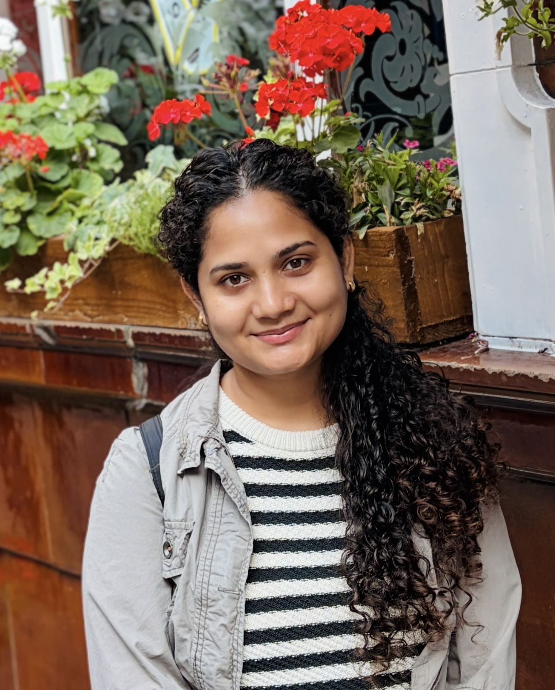

Anshima Singh
Postdoctoral Research Associate at the Department of Mathematics, University of Manchester.
I am a Postdoctoral Research Associate in the Department of Mathematics at the University of Manchester, where I work with Prof. David Silvester and Prof. Catherine Powell on applications of flow-based deep generative models. This work is funded by EPSRC through the Prob_AI Hub.
I completed my PhD in Mathematics at the Indian Institute of Technology (BHU), Varanasi, supervised by Dr. Sunil Kumar. My thesis was on the analysis of high-order methods for time-fractional partial differential equations with smooth and non-smooth solutions. Before moving to Manchester, I worked as a Project Associate at the Indian Institute of Science, Bangalore, with Dr. Ratikanta Behera, designing physics-informed neural networks (PINNs) and their applications.
A list of my papers is under Publications, and my code is under Repositories.
Research areas

Manchester, UK.
Experience and education
Research experience
Education
Fellowships and awards
- University Grants Commission (UGC) Senior Research Fellowship (SRF), 2021–2023
- University Grants Commission (UGC) Junior Research Fellowship (JRF), 2019–2020
- Innovation in Science Pursuit for Inspired Research (INSPIRE) Scholarship, 2012–2017
- Two Gold Medals for securing top position in Mathematics during undergraduate studies (February 2016)
- Qualified Graduate Aptitude Test in Engineering (GATE), February 2018
- Qualified National Eligibility Test (NET-JRF), June 2018
Publications
Preprints and articles under review
-
Adaptive sampling for hydrodynamic stability
-
DAS-PINNs for high-dimensional partial differential equations: extending deep adaptive sampling to spacetime domains
Journal articles
-
High-order hybrid computational method with adaptive mesh strategies for time-fractional nonlinear reaction–diffusion problems featuring weak singularity
-
An efficient wavelet-based physics-informed neural network for multiscale problems
-
A modified cubic B-spline collocation based numerical approximation of a fractional sub-diffusion equation
-
Error analysis of a fast high order spline approximation method for time-fractional nonlinear reaction-diffusion problems exhibiting singular behavior
-
A fast high-order nonpolynomial spline method for nonlinear time-fractional telegraph model for neutron transport in a nuclear reactor
-
Error analysis of a high-order fully discrete method for two-dimensional time-fractional convection-diffusion equations exhibiting weak initial singularity
-
A novel high-order approximation method for higher-dimensional time-fractional reaction-diffusion problems with weak initial singularity
-
Higher order numerical approximations for non-linear time-fractional reaction–diffusion equations exhibiting weak initial singularity
-
On new approximations of Caputo–Prabhakar fractional derivative and their application to reaction-diffusion problems with variable coefficients
-
An efficient numerical method based on exponential B-splines for time-fractional Black–Scholes equation governing European options
-
An efficient computational method based on exponential B-splines for a class of fractional sub-diffusion equations
-
A fully discrete scheme based on cubic splines and its analysis for time-fractional reaction–diffusion equations exhibiting weak initial singularity
-
High-order schemes and their error analysis for generalized variable coefficients fractional reaction–diffusion equations
-
A convergent exponential B-spline collocation method for a time-fractional telegraph equation
Full list on Google Scholar.
Talks
Invited talks
Conference presentations
Workshops, symposia and winter schools
Teaching and service
Teaching assistant, IIT (BHU) Varanasi, 2019–2023
- CSM-421: Numerical Solutions of PDEs
- MA-201: Numerical Techniques
- MA-203: Mathematical Method
- MA-101: Engineering Mathematics I
Reviewer for
- Applied Mathematical Modelling
- Neural Networks
- Communications in Nonlinear Science and Numerical Simulation
- Mathematics and Computers in Simulation
- Journal of Computational and Applied Mathematics
- Journal of Computational and Nonlinear Dynamics
- SN Computer Science
- Computational Methods for Differential Equations
Computational skills
Repositories
Code I have published. More on my GitHub profile.